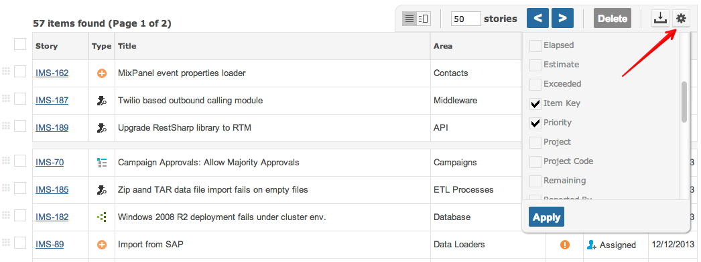

<h1>Setting Grid Columns</h1> 

<p>Everyone can set which columns they wish to see on the grid.</p>
<p></p> 

<div class="well well-small related-box">
    <span class="title">Related</span>
	<ul>
		<li><a href="/Searching-Items">Searching Items</a></li>
		<li><a href="/Sorting-Items">Sorting Items</a></li>
		<li><a href="/Sequencing-Items">Sequencing Items</a></li>
		<li><a href="/Showing-Dependencies">Showing Dependencies</a></li>
		<li><a href="/Including-Closed-Items">Including Closed Items</a></li>		
		<li><a href="/Knowing-What-Changed">Knowing What Changed</a></li>
		<li><a href="/Grid-Item-Actions">Grid Item Actions</a></li>
	</ul>
</div>
